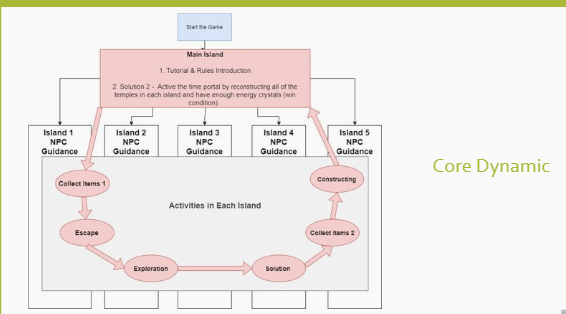
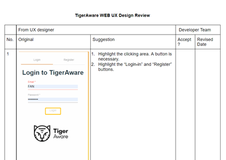

Project 1
Course Project: 3D Learning Game Design by Unity
In the course 9486 - Advanced Designing Games for Learning, our team designed a 3D desktop game that demonstrates examples of architecture and artifacts from various periods. Each period is housed on an island that contains buildings, decorations, and plant life unique to that period. Each island is inhabited by a mentor that will guide the learner on their quest. The mentors are based on influential, colored full real-life persons famous for that period. The extravagant Baroque period, for example, is embodied in Borromini. An architect is famous for his flamboyant disputes with his colleague Bernini. The purpose of this educational game design is to help students distinguish between periods by creating an immersive learning environment that will explain the details and influences of each period.
Click the right link to see a game prototype DemonstrationI learned the process of how to design a game. In this project, the most crucial thing I conducted was to test my idea and prototype. I interviewed players and observed users when they interacted with the game, which provided me feedback. This experience enhanced my skills in UX study.
Figure. Core Dynamic
Project 2
Project Module Leader: UX study for TigerAware survey platform
I have worked on TigerAware (tigeraware.com), a survey platform that allows users to design, collect and analyze surveys. This developer team created the original interface. However, their team needed a UX researcher to provide professional suggestions to improve the UX design. Then I joined their team. Friday, I reviewed the interface and framework of their platform and provided some revise-suggestions. I discussed with the developer team and decided which part could be revised. After this step, we had our new version of that platform. Currently, I am working on writing a UX study proposal. The next step will be to interviewing participants and collect data.
This is my first time communicating with a developer team. As a developer team, they may not clearly understand the meaning of UX design, and they have their own thoughts. Thus, I not only need to list my suggestions to them but also explain the reasons. I practice my skill of communication.
Figure. Screenshot of the Final Report
Project 3
Internship Leader: UX study for Zoom meeting platform
I was the team leader for the Zoom UX project in the IE lab during the last semester. This project was designed for our interns to help them understand the basic process and guide them to go through each step of a UX study. Finally, I wrote the UX report with the team together. Zoom, the virtual meeting platform, is one of the most popular tools for synchronous, digital communication. This platform is used in businesses, K-12 schools, and institutions of higher education. However, the research surrounds the user experience of Zoom is scarce. The goal of this UX study was to analyze the users’ experience of the Zoom meeting platform interface, including potential usability issues. Participants were asked to conduct everyday tasks within a Zoom meeting to help diagnose issues with the user interface design, if any.
In this study, our team designed the study, collected the data, analyzed the data, and received the results. Interns clearly understood the process of a UX study. I was responsible for writing the final UX report, which taught me a lot. Also, communicating with an intern made me practice the skills regarding leadership.